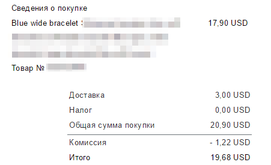
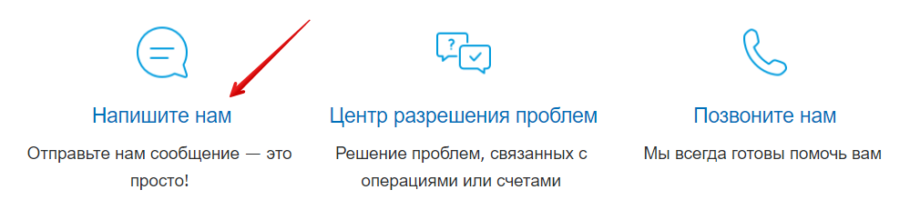
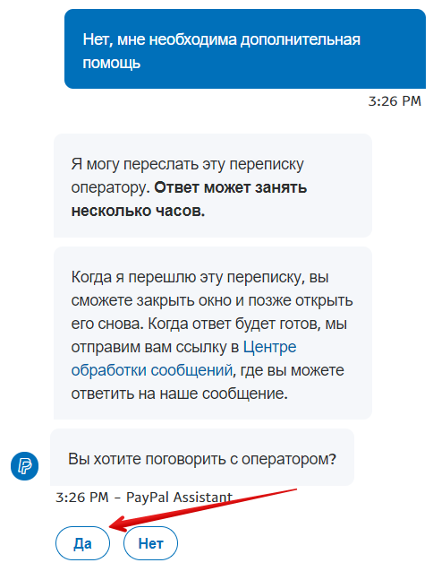
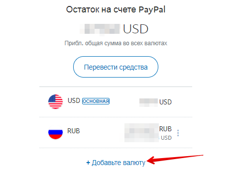
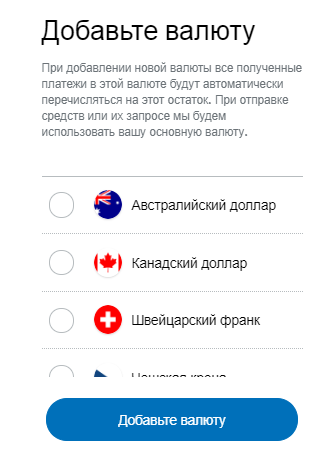
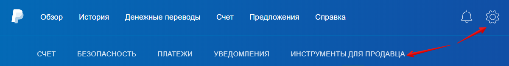

Какую карту можно/лучше привязать к PayPal
ПайПал позволяет привязать карту следующих платёжных систем: Visa,
MasterCard, American Express и Maestro. Выбирайте любую, какая у вас есть или
закажите в любом удобном для вас банке.
Также можно привязать виртуальную карту, которая доступна у различных пла-
тёжных электронных систем, например, Qiwi или Яндекс.Деньги.
Если у вас по какой-то причине не получается привязать одну карту, то просто
попробуйте другую.
Что лучше – использовать для Пайпал зарплатную карту или
завести новую
Я думаю, что лучше использовать новую. Никто не знает, как ваш банк отреаги-
рует на поступление средств с Пайпала на зарплатную карту. И если вдруг её
заблокируют, то вы останетесь без денег.
Поэтому рекомендую завести новую карту, которую вы будете использовать,
например, только для работы с PayPal и Etsy.
Можно ли привязать карту без денег
Для того, чтобы проверить, верно ли вы ввели данные карты, ПайПал спишет с
неё 1-3 доллара. Поэтому на вашей карте должно лежать необходимое количе-
ство денег в переводе на текущих счёт в вашей валюте (если, конечно, у вас не
долларовая карта).
Через 1-2 дня после этого деньги вернутся на вашу карту.
Если на PayPal добавить новую карту вместо старой, то нужно
ли уведомлять Etsy
Нет, Этси никак об этом уведомлять не нужно. Все платежи будут проходить как
и раньше.

Какая комиссия у PayPal
Комиссия за каждую транзакцию рассчитывается в зависимости от страны по-
купателя и его валюты. Комиссия накладывается на общую сумму перевода
(стоимость товара+стоимость доставки) и, например, для России равна 4,4% +
$0.30 USD (если оплата в долларах и покупатель из США).
Например, если покупатель из США перевел мне $20.90 (где стоимость товара
$17.90, а доставка $3), то комиссия с этой суммы равна $1.22 ($0.92+$0.30).
Подробнее о величине комиссии для России вы можете прочитать здесь
https://www.paypal.com/ru/webapps/mpp/ua/useragreement-full#misc
Как связаться с Paypal, если у вас возникли проблемы/во-
просы
Если вам что-то непонятно по работе с сервисом Пайпал, то вы в любой момент
можете обратиться в службу технической поддержки.
У ПайПал есть русскоязычная служба поддержки, поэтому и вопрос можно
написать по-русски.
Для этого нажмите кнопку Связаться с нами внизу страницы.



Если вопрос не очень срочный, то можно задать его письменно через форму
обратной связи, нажав на кнопку Напишите нам внизу открывшейся страницы.
Откроется онлайн-чат. Можно написать ключевые слова, которые вас интере-
суют – система сначала предложит несколько статей из справочного центра.
Если вы не найдёте там ответа, то можно нажать кнопку Нет, мне необходима
дополнительная помощь.


После этого PayPal предложит написать вопрос в техподдержку. Для этого
нажмите кнопку Да внизу.
Напишите ваше сообщение-вопрос.
После этого вам останется ждать ответа от службы поддержки. Для этого доста-
точно проверять электронную почту, которая привязана к ПайПал – туда при-
ходят уведомления о новых сообщениях.
Если же у вас вопрос, который требует быстрого решения, или же вам просто
удобнее общаться с компанией по телефону, вы можете позвонить.


Для этого выберите пункт Позвоните нам.
На следующей странице вы увидите номер телефона, а также одноразовый па-
роль, который нужно назвать специалисту ПэйПал.
Обращаю внимание, что этот пароль действует только 1 час. Если Вы отошли от
компьютера и забыли позвонить, то нужно обновить эту страницу, чтобы си-
стема выдала новый пароль.
Техподдержка работает с 10.00 до 20.30 по московскому времени (с понедель-
ника по пятницу).
Вам ответит русскоязычный специалист PayPal.
Как хранить деньги в PayPal, чтобы они не переводились в
рубли/гривны/местную валюту (а хранились в долларах)
По умолчанию, система PayPal переводит все деньги, которые поступают на
ваш счёт, в вашу местную валюту. Например, так как мы живем в России, все
оплаты на Etsy автоматически конвертируются в российские рубли.
В этом нет ничего плохого, если курс рубля к доллару стабилен – однако собы-
тия последних лет показали, что с этим могут быть проблемы. А потому деньги
лучше хранить в более надёжной и стабильной валюте.
Кроме того, курс вашей местной валюты к доллару каждый день хоть немного,
но меняется. И если покупатель захочет отменить заказ и вернуть свои деньги,
вы можете потерять некоторую сумму на двойной конвертации валют (из дол-
ларов в рубли, а потом из рублей обратно в доллары).
Для недорогих товаров (10-20 долларов) разница может составить, например,
10-50 рублей. А если вы продаёте более дорогие изделия (например, дороже
100 долларов), то эта разница комиссий может быть куда больше. И в резуль-
тате может так получиться, что у вас на счёте будет недостаточно денег для воз-
врата.
Та же самая проблема с двойной конвертацией будет и при оплате комиссий
Этси – их тоже нужно оплачивать в долларах (для жителей СНГ).
Чтобы избежать таких неприятностей, можно настроить ПайПал хранить все
пришедшие платежи в долларах США и не переводить их в вашу местную ва-
люту.
Шаг 1
Нажмите кнопку троеточия справа от Остаток на счёте PayPal – Управление
валютами, чтобы посмотреть, какие валюты у вас добавлены в систему. И какая
из них основная.


Вы увидите, сколько денег на каком счете у вас хранится.
Нажмите кнопку Добавьте валюту.
В новом окне вы увидите список валют, которые можно добавить в аккаунт.


Чтобы добавить доллары США, выберите её, а затем нажмите кнопку Добавить
валюту.
Чтобы назначить любую из валют основной, нужно нажать значок троеточия ря-
дом с ней, а затем нажать кнопку Сделать основной.

К сожалению, в PayPal нельзя переводить деньги между счетами. Поэтому не
получится, например, перевести накопления с рублёвого счёта на долларовый.
Шаг 2
Теперь необходимо пройти процедуру полной идентификации, то есть под-
тверждения личности.
Для этого перейдите на страницу https://www.paypal.com/policy/hub/kyc/
Нажмите Начать работу.
На открывшейся странице необходимо ввести данные своего паспорта и ИНН,
после чего загрузить сканы/фотографии паспорта.


После проверки этих данных (обычно на это уходит 2-3 дня) PayPal расширит
лимиты вашего аккаунта и позволит хранить деньги в разных валютах.
Шаг 3
Дополнительно можно проверить ещё одну настройку (если она вам доступна).
Перейдите в Настройки – Инструменты для продавца.
Появится таблица с различными настройками. Нам нужна строка Настройки по-
лучения платежей. Нажмите Обновить справа от неё.